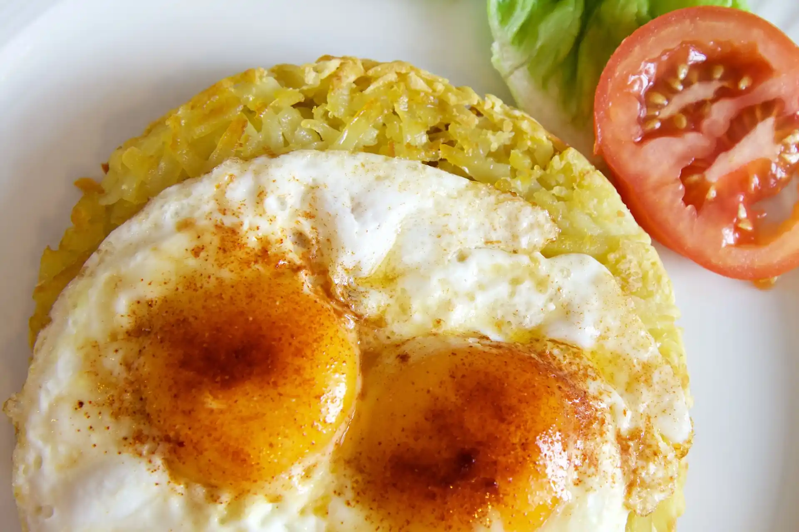
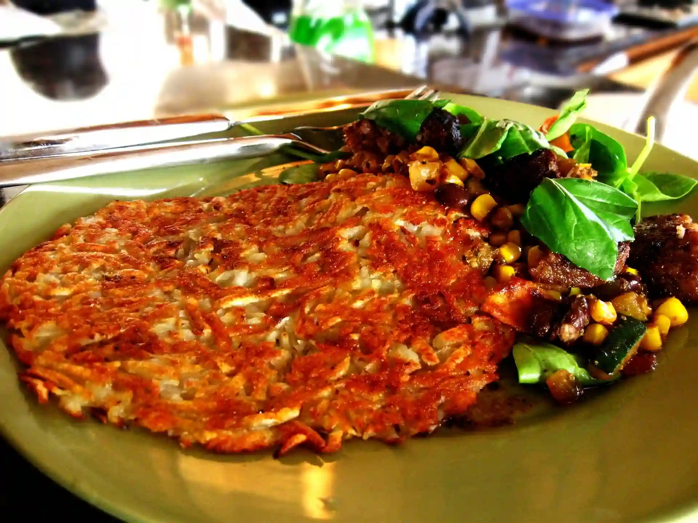
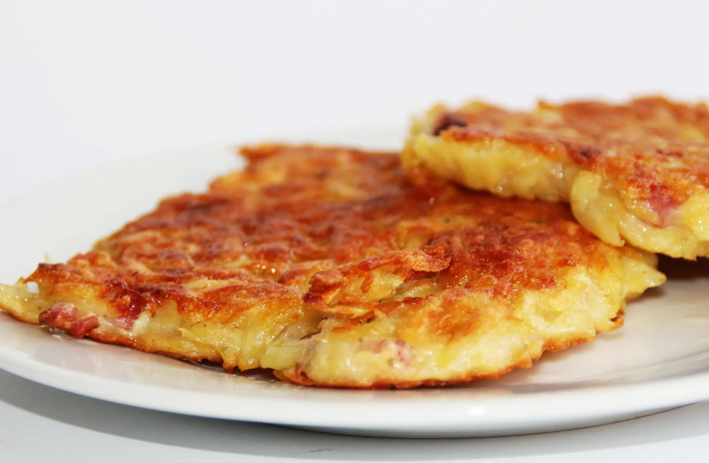
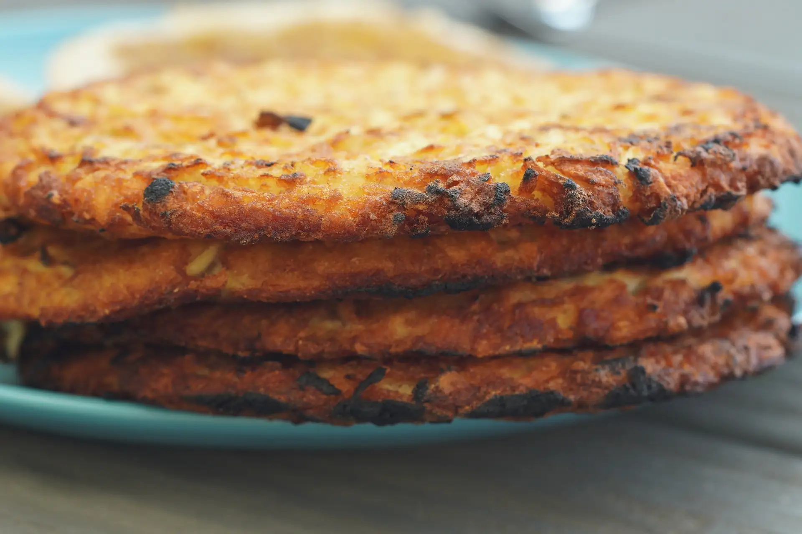

Hasbrown Patties: The Ultimate Breakfast Sidekick

From Shred to Sizzle
To make the ultimate hashbrown patties, start by shredding your choice of potato and shaping it like a patty, you then fry it until golden and crispy. Creating hasbrown patties is simple, however, getting the right texture may be tricky. Adding salt and pepper to your hashbrown patties really boosts their flavour. And if you cook them for just the right amount of time and at the right temperature, they'll turn out crispy on the outside and soft on the inside. Whether you're a beginner cook or have more experience, this guide can help you achieve a fan favourite breakfast snack.

Healthier Option for the Conscious Eater
If you crave for something lighter at breakfast, hashbrown patties is one of the ultimate breakfast option to choose for a healthy lifestyle. The amazing thing about hashbrown patties are that you can just bake them instead of frying! You can also choose to use healthier oil options such as olive oil or avocado oil. Both oils are also great for flavour. Another way to spice up your hasbrown patties are mixing vegetables like spinach, brocolli, or zucchini to keep it healthy. With a few additions, hashbrown patties can be a healthy option for the conscious eater!

Beyond Breakfast: Versatile Uses
Hashbrown patties aren’t just for breakfast; they’re surprisingly versatile because they’re made from potatoes. You can enjoy them at any meal! For instance, try topping them with eggs and avocado, using them as a crispy base for a loaded casserole, or making a breakfast sandwich with hashbrown patties as the bun. They also work well as a side dish with grilled chicken or fish. Whether you’re having them as a classic dish or a snack, hashbrown patties can fit into any part of your day!

Making the Ultimate Hasbrown Patty at Home
Making the ultimate hashbrown patty at home is easier than you might think. Start with some russet potatoes for the best texture. Peel and grate them, then rinse the shreds in cold water to remove excess starch. After drying them well, mix in a bit of salt and pepper for flavor. Heat a non-stick pan with a little oil, then shape the shredded potatoes into patties. Cook them until they’re golden brown and crispy on both sides. For added flavor, toss in some chopped onions or cheese. Serve them right away and enjoy your delicious, homemade hashbrown patties!